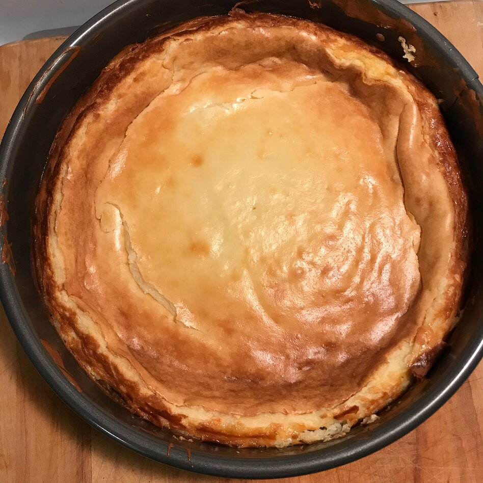

Cheesecake

Description
This is a baked cheesecake.
It has a vanilla flavour and a buttery buscuit base!
Ingredients
- Graham crackers
- Butter
- Sugar
- Cream cheese
- Sour cream
- Vanilla
- Eggs
- Cherry pie filling
Steps
Heat oven to 350 degrees F.
Mix graham crumbs, butter and 1/4 cup sugar; press onto bottom of 9-inch springform pan.
Beat cream cheese and remaining sugar in large bowl with mixer until blended. Add sour cream and vanilla; mix well. Add eggs, 1 at a time, beating on low speed after each addition just until blended. Pour over crust.
Bake 1 hour to 1 hour 10 min. or until center is almost set. Run knife around rim of pan to loosen cake; cool before removing rim. Refrigerate cheesecake 4 hours.
Top with pie filling before serving.